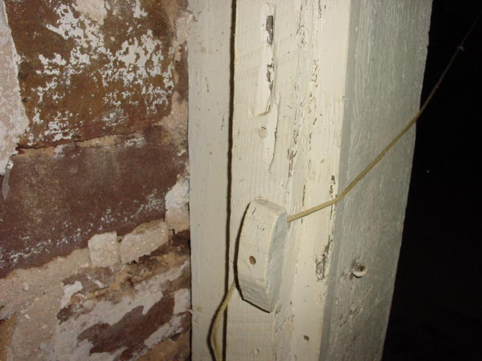

|  |
|
Unfortunately, the lighting in the lesser hall is somewhat, um .. unique. The pull-cord catch on the light is broken, meaning a continuous tension must be kept to keep the lamp engaged. The previous tennant used this old disused door-lock and a rope to do this. Far be it from us to correct his methods. |